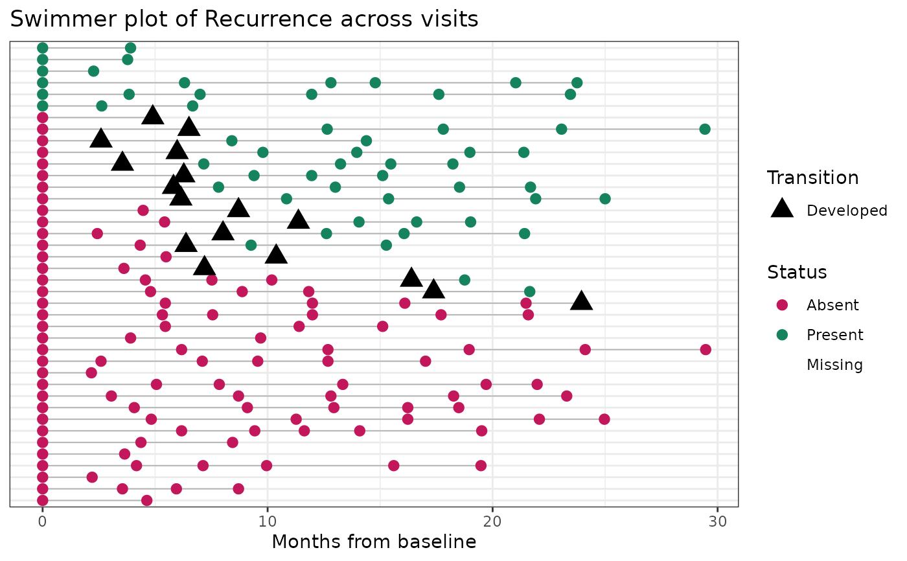

Plot swimmer-style transitions for a binary condition over repeated visits
Source:R/PlotSwimmerTransitions.R
PlotSwimmerTransitions.RdCreate a swimmer-style longitudinal plot for a binary condition measured across repeated visits. The plot shows condition status at each visit, highlights transition points where the condition develops or resolves, and supports multiple participant ordering strategies for exploratory quality control, longitudinal debugging, or figure creation.
Usage
PlotSwimmerTransitions(
data,
id_var,
time_var,
status_var,
date_var = NULL,
participant_subset = NULL,
max_participants = NULL,
order_participants_by = c("first_positive", "first_transition", "ever_positive",
"ever_positive_then_burden", "input_order", "n_visits", "n_positive", "pct_positive"),
x_axis_type = c("visit", "date", "time_from_baseline"),
time_from_baseline_unit = c("days", "months", "years"),
show_transition_points = TRUE,
show_lines = TRUE,
show_y_axis_labels = FALSE,
interactive = FALSE,
plot_title = NULL,
x_label = NULL,
y_label = NULL,
return_data = FALSE,
make_interactive = lifecycle::deprecated()
)Arguments
- data
A data frame containing repeated observations per participant.
- id_var
Unquoted column name identifying the participant.
- time_var
Unquoted column name representing visit order, visit number, or time index.
- status_var
Unquoted column name representing the binary condition status. Accepted encodings include numeric 0/1, logical TRUE/FALSE, factor values such as
"Yes"and"No", and character values such as"1"and"0".- date_var
Optional unquoted visit date column. This is required when
x_axis_type = "date"orx_axis_type = "time_from_baseline".- participant_subset
Optional vector of participant IDs to include.
- max_participants
Optional maximum number of participants to display after ordering is applied.
- order_participants_by
Character string controlling participant order in the plot. Options are
"first_positive","first_transition","ever_positive","ever_positive_then_burden","input_order","n_visits","n_positive", and"pct_positive".- x_axis_type
Character string indicating whether the x-axis should use aligned visit number (
"visit"), actual calendar date ("date"), or elapsed time from each participant's baseline date ("time_from_baseline").- time_from_baseline_unit
Character string specifying the unit for
x_axis_type = "time_from_baseline". Options are"days","months", and"years".- show_transition_points
Logical. If
TRUE, transition visits are highlighted.- show_lines
Logical. If
TRUE, a swimmer line is drawn across visits within each participant.- show_y_axis_labels
Logical. If
TRUE, show participant labels on the y-axis. Defaults toFALSE.- interactive
Logical. If
TRUE, return an interactive plotly object. Defaults toFALSE.- plot_title
Optional custom plot title.
- x_label
Optional x-axis label.
- y_label
Optional y-axis label. Defaults to
NULL.- return_data
Logical. If
TRUE, return both the plot and the processed data.- make_interactive
Deprecated (since 19.15.0). Use
interactiveinstead.
Value
A ggplot object by default.
If interactive = TRUE, returns a plotly object.
If return_data = TRUE, returns a list with:
plot: theggplotorplotlyobjectplot_data: the processed visit-level plotting dataparticipant_summary: the participant-level summary table
Details
Visits are sorted within participant by date_var if provided, otherwise by
time_var.
Transition rules are defined as:
0 -> 1="Developed"1 -> 0="Resolved"
Missing status values remain NA and are not forced to 0.
Participant-level summaries are created internally, including:
whether the participant was ever positive
first positive visit
first transition visit
number of observed visits
number and proportion of positive visits
whether positivity is sustained after first onset
whether resolution is sustained after first resolution
Sustained after development means that all non-missing observations after the
first 0 -> 1 transition remain positive.
Sustained after resolution means that all non-missing observations after the
first 1 -> 0 transition remain negative.
When x_axis_type = "visit", participants are aligned by visit order.
When x_axis_type = "date", visits are shown at actual calendar dates and do
not need to align across participants.
When x_axis_type = "time_from_baseline", each participant starts at time 0
based on their earliest observed date.
When interactive = TRUE, the function returns a plotly object and
uses the internally prepared tooltip text for hover labels.
Examples
# \donttest{
# Build a swimmer-shaped dataset from the survival::colon data: each subject
# contributes a variable number of follow-up visits and a binary condition
# (recurrence) that can develop over time.
if (requireNamespace("survival", quietly = TRUE)) {
set.seed(2024)
subjects <- survival::colon |>
dplyr::filter(etype == 1) |>
dplyr::distinct(id, .keep_all = TRUE) |>
dplyr::slice_sample(n = 40) |>
dplyr::transmute(
SubjectID = paste0("P", id),
n_visits = pmin(pmax(round(time / 400) + 2, 2), 6),
onset = purrr::map_int(n_visits, ~ sample(0:.x, 1))
)
swimmer_df <- subjects |>
dplyr::mutate(Visit = purrr::map(n_visits, seq_len)) |>
tidyr::unnest(Visit) |>
dplyr::group_by(SubjectID) |>
dplyr::mutate(
VisitDate = as.Date("2020-01-01") +
cumsum(c(0, sample(60:200, dplyr::n() - 1, TRUE))),
Recurrence = as.integer(onset > 0 & Visit >= onset)
) |>
dplyr::ungroup() |>
dplyr::select(SubjectID, Visit, VisitDate, Recurrence)
# Aligned by visit number, ordered by when the condition first develops
PlotSwimmerTransitions(
data = swimmer_df,
id_var = SubjectID,
time_var = Visit,
status_var = Recurrence,
order_participants_by = "first_transition"
)
# Positioned by elapsed time from each participant's baseline visit
PlotSwimmerTransitions(
data = swimmer_df,
id_var = SubjectID,
time_var = Visit,
status_var = Recurrence,
date_var = VisitDate,
x_axis_type = "time_from_baseline",
time_from_baseline_unit = "months"
)
}

# }